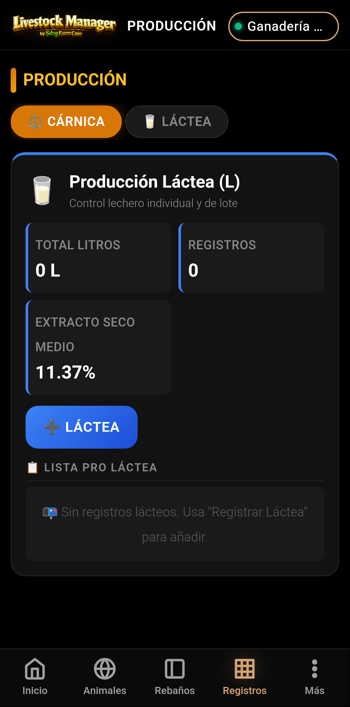
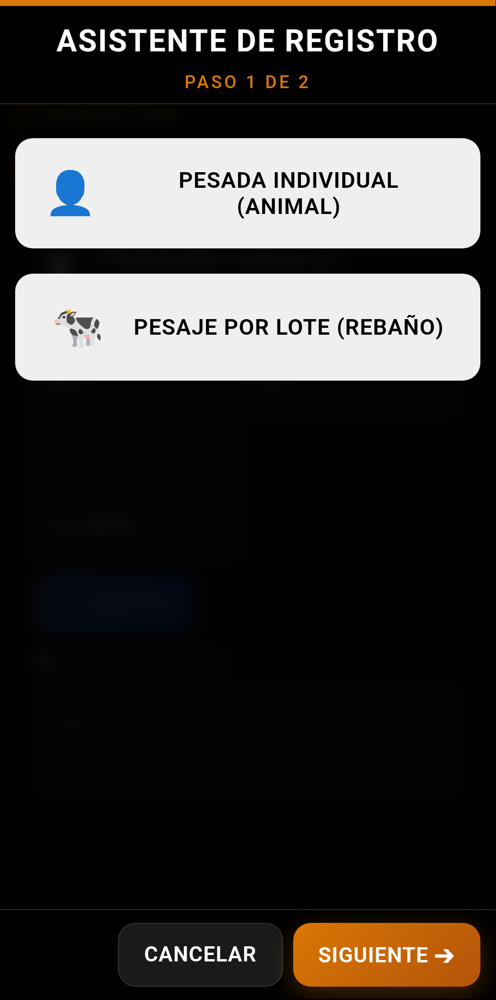
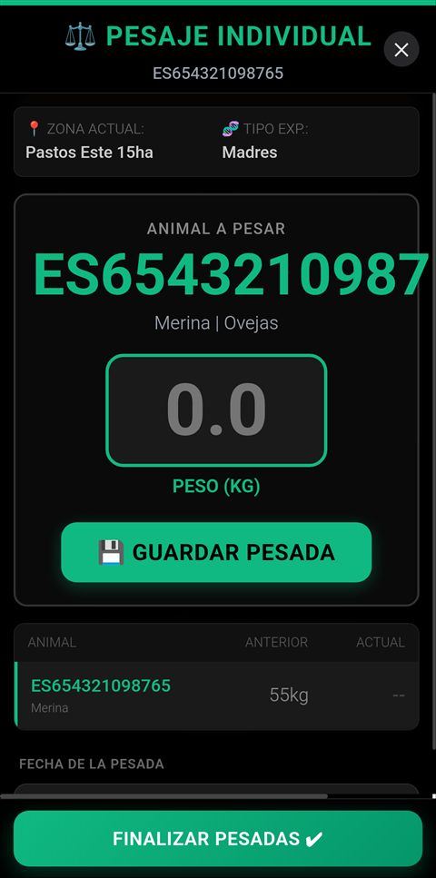
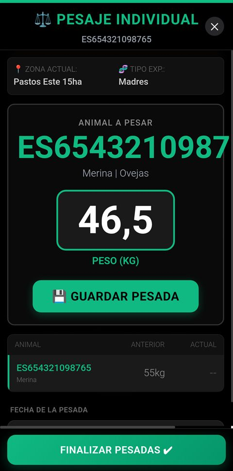
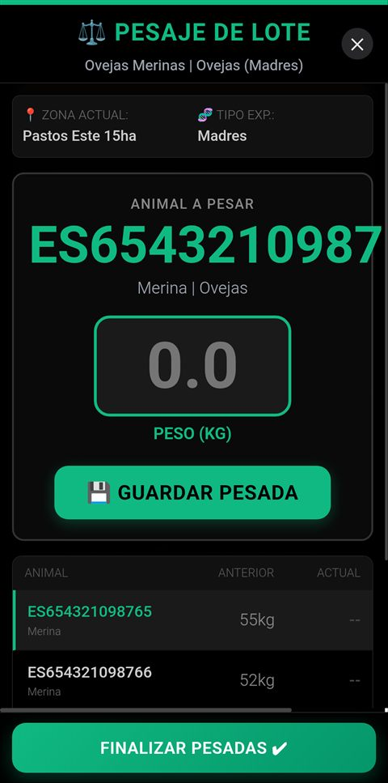
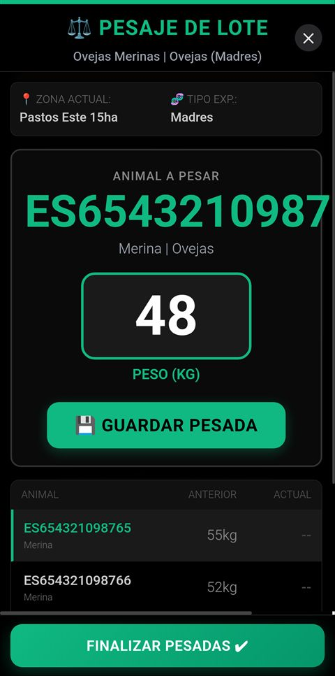

Pesada Individual de Animal y Pesaje por Lote de Rebaño — Guía completa paso a paso
MANUAL PRÁCTICO · Todos los flujos de pesaje en producción cárnica
📖 Sobre este manual
Este manual documenta los flujos de pesaje disponibles en Livestock Manager para producción cárnica:
la pesada individual de un animal y el pesaje por lote de un rebaño completo.
El acceso se realiza desde Registros → Producción (pestaña ⚖️ Cárnica),
utilizando el Asistente de Producción que guía paso a paso en la selección de modalidad,
búsqueda del animal o rebaño, y registro del peso.
Desde el menú inferior, pulsa Registros → Producción para acceder a la
vista de producción. Por defecto se muestra la pestaña ⚖️ Cárnica.

Vista principal de la sección de Producción con la pestaña Cárnica activa.
En esta pantalla puedes ver:
Indicadores clave: Nº de animales, peso medio, GMD media del período
Últimos registros: Lista de las últimas pesadas registradas
Botón de acción:+ NUEVA PESADA que abre el Asistente de Producción
Asistente
2. Asistente de Producción
El Asistente de Producción es un wizard maestro que guía en la selección del
tipo de registro de producción. Al abrirlo con el preset "carne", se salta el
primer paso (selección de especie/producto) y va directamente a la selección de modalidad.

Paso de selección de modalidad: elegir entre Pesada Individual o Pesaje por Lote.
El asistente muestra las dos modalidades disponibles para producción cárnica:
Modalidad
Descripción
Uso recomendado
🐄 Pesada Individual
Registra el peso de un solo animal
Seguimiento individualizado, cebaderos selectivos
🐑 Pesaje por Lote
Registra el peso de todo un rebaño de una vez
Pesajes rutinarios, control de lote completo
Individual
3. Pesada Individual de Animal
Esta opción permite registrar el peso de un animal concreto. Es útil para
controles individualizados de engorde, seguimiento veterinario, o preparación para venta.
1. Modalidad2. Buscar animal3. Pesada
Paso 1 de 2
4. Búsqueda y selección del animal

Pantalla de búsqueda de animal. Se puede buscar por DIB, nombre o filtrar por categoría.
En esta pantalla puedes:
Buscar por DIB (Documento de Identificación Bovino) introduciendo el número en el campo de búsqueda
Buscar por nombre si el animal tiene nombre registrado
Filtrar por categoría (cebones, primalas, madres, etc.)
Seleccionar el animal pulsando sobre su ficha en la lista de resultados
Una vez seleccionado el animal, la app muestra su información básica:
DIB / crotal completo
Raza y sexo
Fecha de nacimiento y edad
Peso en el alta y último peso registrado (si existe)
Tip: Si tienes muchos animales, usa el filtro de categoría para acotar la búsqueda.
También puedes escanear el crotal con la cámara si tu dispositivo lo soporta.
Paso 2 de 2
5. Registro de la pesada individual

Formulario de registro de peso individual con campos de peso y observaciones.
En la pantalla de pesada individual se muestra:
Campo
Descripción
Animal
Nombre/DIB del animal seleccionado (solo lectura)
Fecha
Fecha de la pesada (por defecto hoy)
Peso (kg)
Campo principal para introducir el peso del animal
Tipo de pesada
Seleccionar tipo: control, alta, venta, etc.
Observaciones
Notas adicionales sobre la pesada (opcional)
📊 GMD: Si el animal tiene un peso anterior registrado, la app calcula automáticamente
la Ganancia Media Diaria (GMD) mostrando la ganancia o pérdida de peso desde la última pesada.
📐 Ejemplo de cálculo de GMD
Animal
Peso anterior
Peso actual
Días
GMD
Merino 247
32,5 kg
38,2 kg
21 días
+271 g/día
Pulsa GUARDAR para registrar la pesada. Automáticamente:
Se actualiza el peso del animal en su ficha
Se registra en el histórico de pesadas
Se recalcula la GMD del animal
Vuelves a la vista de producción
Lote
6. Pesaje por Lote de Rebaño
Esta opción permite registrar el peso de todos los animales de un rebaño en una sola
operación. Ideal para pesajes rutinarios donde se pesa a todo el grupo.
1. Modalidad2. Buscar rebaño3. Pesaje
Paso 1 de 2
7. Búsqueda y selección del rebaño

Pantalla de búsqueda de rebaño. Selecciona el rebaño a pesar de la lista disponible.
En esta pantalla puedes:
Buscar por nombre del rebaño en el campo de búsqueda
Filtrar por ubicación (zona/cobertizo) si tienes varias ubicaciones
Ver detalles del rebaño: número de animales, peso medio, última pesada
Seleccionar el rebaño pulsando sobre su tarjeta
Nota: Solo se muestran rebaños que contengan animales activos. Si un rebaño
no aparece, verifica que tenga animales dados de alta en Registros → Animales.
Paso 2 de 2
8. Registro del pesaje por lote

Pantalla de pesaje por lote: tabla con todos los animales del rebaño para registrar su peso.
En la pantalla de pesaje por lote se muestran todos los animales del rebaño en una tabla
donde puedes introducir el peso de cada uno:
Campo
Descripción
Lista de animales
Tabla con todos los animales del rebaño: DIB, nombre, peso anterior (si tiene)
Peso (kg)
Campo editable para introducir el peso de cada animal
Navegación
Si hay muchos animales, puedes hacer scroll o usar paginación
Fecha común
Fecha de la pesada para todos los animales del lote
Tip: Si usas una báscula conectada, puedes usar la entrada rápida: pesa un animal,
introduce el peso, pasa al siguiente. La app mantiene el foco en el campo de peso para agilizar el proceso.
⚡ Flujo rápido: En el pesaje por lote, la app está optimizada para trabajo de campo:
Pesa el primer animal → introduce el peso
Pulsa Enter → el cursor salta al siguiente animal
Repite hasta completar el lote
Pulsa GUARDAR TODO → se registran todas las pesadas a la vez
Al guardar, la app:
Registra el peso de cada animal individualmente
Actualiza el peso medio del rebaño
Calcula la GMD individual para cada animal con peso anterior
Muestra un resumen con los resultados del pesaje
📋 Resumen de pesaje por lote
Rebaño
Animales pesados
Peso total
Peso medio
GMD media
Merinas Engorde
24
902,4 kg
37,6 kg
+198 g/día
Tip: Si algún animal no se ha podido pesar (por ejemplo, está en tratamiento o apartado),
puedes marcarlo como "No pesado" y se saltará en el registro.
Livestock Manager v4.7.0 · Manual de Pesadas · Individual y por Lote